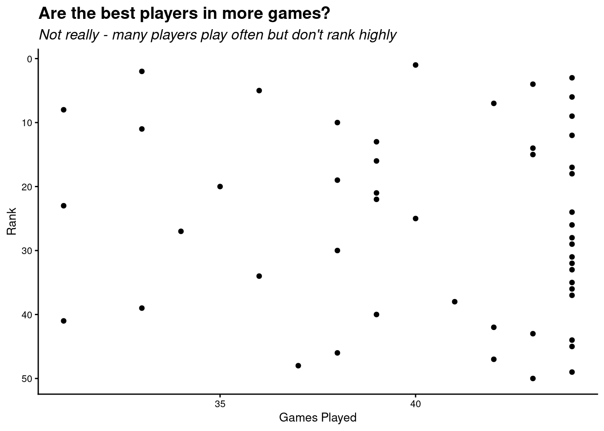
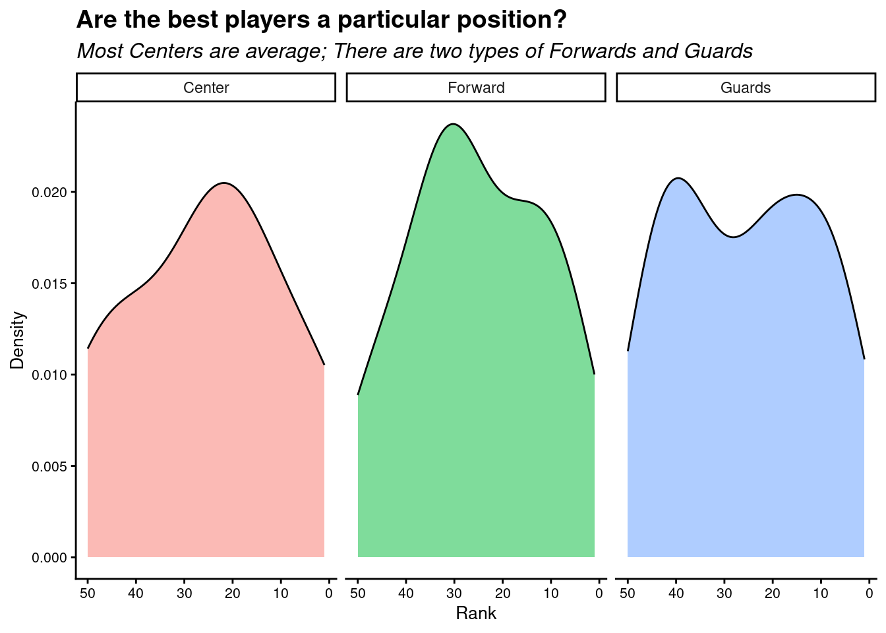

Will S
One of our datasets would require some webscrapping to get access to the data. I wanted to try just that.
I started by looking at the robots.txt for the website and learned that we can explore it.
First I had to install rvest on our virtual environment
Then I
Code
# Helper function to reduce html_elements() |> html_text() code duplication
get_text_from_page <- function(page, css_selector) {
page |>
html_elements(css_selector) |>
html_text()
}
scrape_page <- function(url) {
Sys.sleep(2)
page <- read_html(url)
column_names = get_text_from_page(page, ".Table__TH")
table <- get_text_from_page(page, ".Table__TD")
# get index and names
names_index <- table[1:100]
index <- names_index[seq(from = 1, to = length(names_index), by=2)]
names <- names_index[seq(from = 2, to = length(names_index), by=2)]
# get stat values
df <- data.frame(matrix(table[101:length(table)], nrow = length(index), ncol=20, byrow = TRUE))
df <- cbind(index, names, df)
names(df) <- column_names
df <- df %>% mutate(across(-c(Name, POS), as.numeric))
return(df)
}Code
df %>%
ggplot(aes(x = GP, y = RK)) +
geom_point() +
scale_y_reverse()+
labs(x = "Games Played", y = "Rank", title = "Are the best players in more games?", subtitle = "Not really - many players play often but don't rank highly") +
theme_classic() +
theme(
axis.title.x = element_text(size = 10),
axis.title.y = element_text(size = 10),
axis.text.x = element_text(size = 8),
axis.text.y = element_text(size = 8),
plot.title = element_text(size = 14, face = "bold"),
plot.subtitle = element_text(size = 12, face = "italic"),
)
Code
df %>%
ggplot(aes(x = RK, fill = POS)) +
geom_density(alpha = 0.5) +
scale_x_reverse() +
scale_color_colorblind() +
facet_wrap(
~POS,
labeller = as_labeller(c("C" = "Center", "F" = "Forward", "G" = "Guards"))
) +
labs(x = "Rank", y = "Density", title = "Are the best players a particular position?", subtitle = "Most Centers are average; There are two types of Forwards and Guards") +
theme_classic() +
theme(
axis.title.x = element_text(size = 10),
axis.title.y = element_text(size = 10),
axis.text.x = element_text(size = 8),
axis.text.y = element_text(size = 8),
plot.title = element_text(size = 14, face = "bold"),
plot.subtitle = element_text(size = 12, face = "italic"),
legend.position = "none"
)